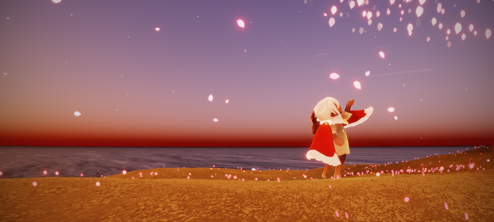
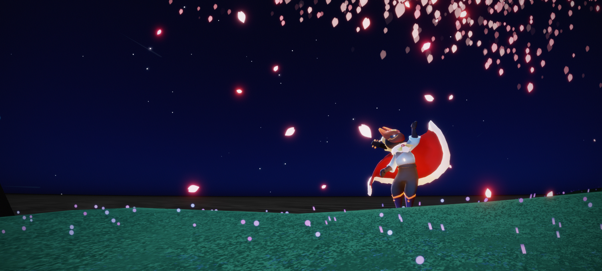

遇境
情人節
光遇裡常常會有應景的節日活動，像這張圖就是情人節時的遇境，新增了一個情人碼頭，到處都張燈結綵的，掛滿了溫馨的燈串，還會有定時施放的煙火。
♠ ♥ ♦ ♣ ♠ ♥ ♦ ♣ ♠ ♥ ♦ ♣ ♠ ♥ ♦ ♣ ♠ ♥ ♦ ♣ ♠ ♥ ♦ ♣ ♠ ♥ ♦ ♣ ♠ ♥ ♦ ♣ ♠ ♥ ♦ ♣ ♠ ♥ ♦ ♣ ♠ ♥ ♦ ♣ ♠ ♥ ♦ ♣ ♠ ♥ ♦ ♣ ♠ ♥ ♦ ♣ ♠
▼ ▼ ▼ ▼ ▼ ▼ ▼ ▼ ▼ ▼ ▼ ▼ ▼ ▼ ▼ ▼ ▼ ▼ ▼ ▼ ▼ ▼ ▼ ▼ ▼ ▼ ▼ ▼ ▼ ▼ ▼ ▼ ▼ ▼ ▼ ▼ ▼ ▼ ▼ ▼ ▼ ▼ ▼

